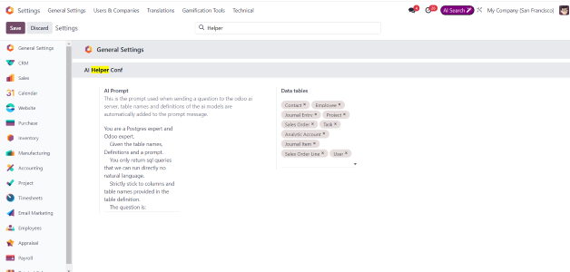

TEOS AI Helper
This is an experimental addon, that relies on odoo AI server to answer question about the odoo db.
Informations
- The AI prompt and models included in the query sent can be modified in the general settings:

- Using the the AI models chosen a table definition is sent with the prompt, in order to help the AI better understand our database structure.
- This is just an experimental addon, The AI might hallucinate in some cases and give wrong answers.
- Please contact us with any ideas or feedback.